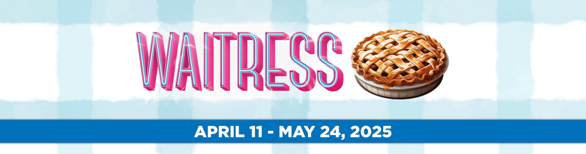
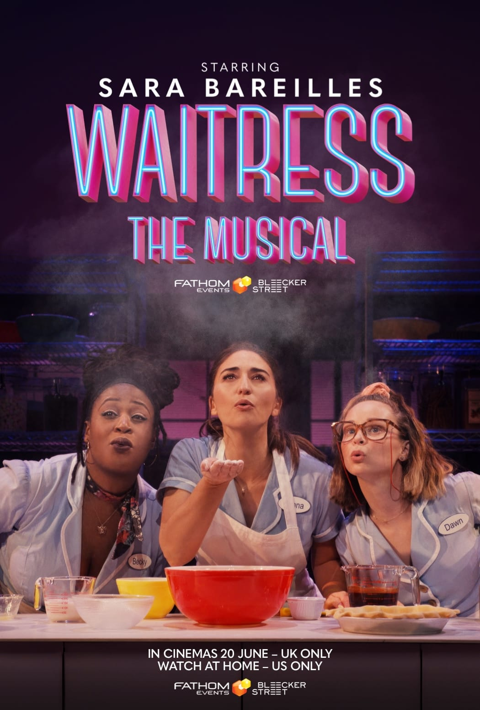

<!DOCTYPE html>
<html lang="es">
   <head>
      <meta charset="UTF-8" />
      <meta name="viewport" content="width=device-width, initial-scale=1.0" />
      <title>Mi Primer Sitio Web</title>
   </head>
   <body>
      <!-- Contenido de la página va aquí-->
   </body>
</html>

<div>
    
</div>


<header>
    <H1>WAITRESS THE MUSICAL <H1>
    <h2> The Hit Broadway Musical</H2>
<header>

    <main>
        <div>
            <p>
                Waitress: The Musical is a heartwarming and empowering Broadway hit based on the 2007 film by Adrienne Shelly. With music and lyrics by Grammy nominee Sara Bareilles, the show follows the life of Jenna, a waitress and expert pie-maker, as she navigates a challenging marriage and an unexpected pregnancy. Along the way, Jenna discovers the power of friendship, love, and self-reliance, all while pursuing her dream of happiness and independence. Featuring an uplifting score and a relatable story, Waitress is a celebration of resilience and the sweetness of life.
            </p>
        </div>

        <hr />
        <H3>Main Characters</H3>
        
        <div>
            <ul>
                <li>Jenna Hunterson – A waitress and pie-maker, stuck in an unhappy marriage.</li>
                <li>Dr. Pomatter – Jenna's charming, if not unconventional, gynecologist.</li>
                <li>Earl Hunterson – Jenna’s controlling and abusive husband.</li>
                <li>Becky – Jenna's outspoken and supportive co-worker.</li>
                <li>Dawn – Another waitress, quirky and shy, but seeking love.</li>
                <li>Joe – The diner’s grumpy owner, who has a soft spot for Jenna.</li>
            </ul>
        </div>
       
        <h3>Famous Songs</h3>
        <div>
            <ul>
                <li>"What’s Inside"</li>
                <li>"Opening Up"</li>
                <li>"She Used to Be Mine"</li>
                <li>"Bad Idea"</li>
                <li>"Everything Changes"</li>
            </ul>
        </div>

        <div>
        </div>
    </main>

    <footer>
        <div class="footer-content">
          <p>© 2024 Waitress: The Musical Fan Page | All Rights Reserved</p>
          <p>
            <a href="#about">About</a> | 
            <a href="#tickets">Get Tickets</a> | 
            <a href="#cast">Cast & Crew</a> | 
            <a href="#contact">Contact</a>
          </p>
          <div class="social-media">
            <a href="https://www.facebook.com/WaitressMusical" target="_blank">Facebook</a> |
            <a href="https://twitter.com/WaitressMusical" target="_blank">Twitter</a> |
            <a href="https://www.instagram.com/waitressmusical" target="_blank">Instagram</a>
          </div>
        </div>
      </footer>

